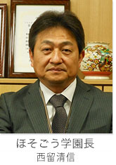

学園からのメッセージ

平成２７（２０１５）年春に、池田市初、一体型小中一貫校「ほそごう学園」（池田市立細郷小学校、池田市立細郷中学校）が開校いたしました。これまで培ってきた三校の取り組みや伝統を受け継ぎながら、新たなステージに向かってスタートしたほそごう学園は、平成２９（２０１７）年度には、特認校制度が導入され、また、学校運営協議会も設置されコミュニティスクールとして新しい一歩を踏み出しています。
- 細郷中学校 細郷小学校 校長先生からのメッセージ
- 施設一体型小中一貫校「ほそごう学園」が開校して３年目を迎えました。
今年度は、義務教育９年間を包括的かつ効果的に進めるために、前期(１年～４年)・中期(５年～７年)・後期(８年・９年)の３つのステージを意識し、子どもたちの成長年齢に合わせた教育活動を推進します。各ステージの最上学年にあたる子どもたちには、取り組みにおいてリーダー性を引き出すとともに、下級生の子どもたちには、活躍の場を創り出すことで、自己有用感が高まるような集団形成を構築していきたいと考えています。
本学園は、小中の壁を打破し、義務教育の新しい教育活動のあり方を常に模索しています。先には、「義務教育学校」という、次のステップにつながる学校のスタイルを追究し、子どもたちの豊かな学力や鋭い人権感覚の育成をめざして、ほそごうの子どもたちの成長を願っています。
最後になりますが、保護者や地域の皆さまには、ほそごう学園に温かいご支援を賜りますよう、何卒よろしくお願いいたします。
